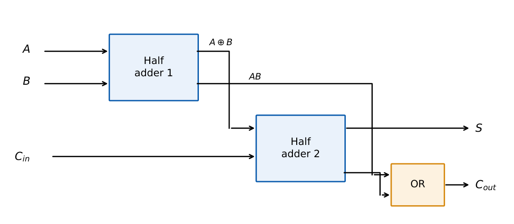
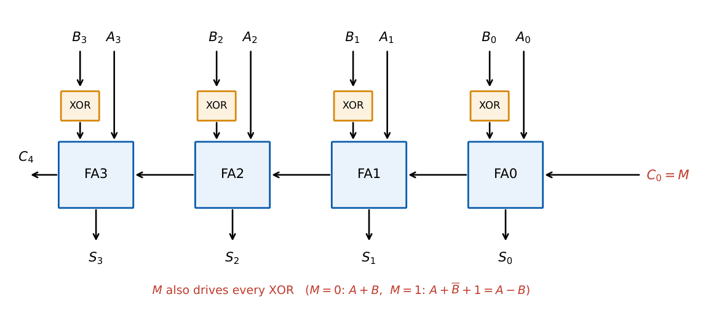

Arithmetic Circuits, Comparators and the ALU
In this chapter
Full-adder equations, ripple versus look-ahead delay, the adder–subtractor with overflow, BCD adder correction, magnitude comparators and the structure of an ALU. Delay calculations in NAT form are common.
5.1 Half adder and full adder
Half adder (HA): \(S=A\oplus B,\ \ C=AB\).
Full adder (FA): \(S=A\oplus B\oplus C_{in},\quad C_{out}=AB+C_{in}(A\oplus B)=AB+BC_{in}+AC_{in}\) (majority).
An FA = 2 HAs + 1 OR gate. FA outputs: \(S=1\) for an odd number of 1s at the inputs; \(C_{out}=1\) for two or more.

5.2 Half and full subtractor
Half subtractor: \(D=A\oplus B,\quad B_{out}=\overline AB\).
Full subtractor: \(D=A\oplus B\oplus B_{in},\quad B_{out}=\overline AB+\overline AB_{in}+BB_{in}\).
A full subtractor is a full adder with \(A\) complemented at the carry logic: \(B_{out}\) equals the carry of \(\overline A+B+B_{in}\).
5.3 Multi-bit adders
5.3.1 Ripple-carry adder (RCA)
\(n\) full adders in cascade; \(C_{out}\) of stage \(i\) feeds \(C_{in}\) of stage \(i+1\). The delay is dominated by carry propagation and grows linearly with \(n\). \[ t_{RCA}\approx (n-1)\,t_{carry}+t_{sum}, \] with \(t_{carry}\) the carry-in to carry-out delay of one FA and \(t_{sum}\) its carry-in to sum delay.
5.3.2 Carry-lookahead adder (CLA)
Define for each bit generate \(G_i=A_iB_i\) and propagate \(P_i=A_i\oplus B_i\) (or \(A_i+B_i\)). Then \[ C_{i+1}=G_i+P_iC_i,\qquad S_i=P_i\oplus C_i. \] Expanding gives carries directly from the inputs: \begin{align*} C_1&=G_0+P_0C_0\\ C_2&=G_1+P_1G_0+P_1P_0C_0\\ C_3&=G_2+P_2G_1+P_2P_1G_0+P_2P_1P_0C_0\\ C_4&=G_3+P_3G_2+P_3P_2G_1+P_3P_2P_1G_0+P_3P_2P_1P_0C_0. \end{align*} All carries are two gate levels (AND–OR) after \(G,P\), independent of \(n\) (assuming unlimited fan-in). Gate counts and fan-in grow with \(n\), so large adders use blocks of 4 bits with second-level lookahead.
Let each gate cost one unit. \(G_i,P_i\) ready at \(t=1\). RCA: \(C_{i+1}\) every 2 units, so \(C_n\) at \(1+2n\); the last sum \(S_{n-1}\) at \(2n\).
CLA (4-bit block): all carries at 3, all sums at 4, independent of the position within the block.
5.3.3 Other fast adders
Carry-skip (bypass a block when all \(P_i=1\)), carry-select (compute both \(C_{in}=0\) and \(C_{in}=1\) results and choose with a MUX) and prefix adders (Kogge–Stone, Brent–Kung) reduce delay to \(O(\log n)\) at an area cost.
5.4 Adder–subtractor

XOR each \(B_i\) with the mode input \(M\) and feed \(M\) into \(C_0\). For \(M=1\): \(A+\overline B+1=A-B\) in two’s complement. Signed overflow: \(V=C_{n-1}\oplus C_n\). Unsigned subtraction: carry-out \(=1\) means no borrow (\(A\ge B\)); carry-out \(=0\) means borrow.
\(A=0101\,(5)\), \(B=0011\,(3)\), \(M=1\): \(A+\overline B+1=0101+1100+1=1\,0010\). Result \(0010=2\), carry-out \(=1\) (no borrow).
Overflow check, signed: \(0110+0101=1011\): operands \(+6,+5\), result negative, \(V=1\) (true sum \(11>7\)).
5.5 BCD adder
Add two BCD digits in a 4-bit binary adder, producing \(Z_3Z_2Z_1Z_0\) and carry \(K\). Correction is needed when the sum exceeds 9 or \(K=1\): \[ \text{carry out}=K+Z_3Z_2+Z_3Z_1. \] When that signal is 1, a second 4-bit adder adds \(0110\) to the sum. A one-digit BCD adder therefore uses two 4-bit binary adders plus a few gates.
5.6 Magnitude comparator
For one bit: \(A>B:\ A\overline B\); \(A<B:\ \overline AB\); \(A=B:\ A\odot B\).
Let \(x_i=A_i\odot B_i\). Then \((A=B)=x_{n-1}x_{n-2}\cdots x_0\).
\((A>B)=A_{n-1}\overline{B_{n-1}}+x_{n-1}A_{n-2}\overline{B_{n-2}}+x_{n-1}x_{n-2}A_{n-3}\overline{B_{n-3}}+\cdots\)
Comparators cascade by feeding the previous result into the least-significant stage (74x85 style \(A>B\), \(A=B\), \(A<B\) inputs).
5.7 Binary multiplier
Multiplying a \(J\)-bit multiplicand by a \(K\)-bit multiplier forms \(K\) partial products (\(J\) ANDs each), added with shifts. A combinational array multiplier uses \(J\times K\) AND gates and \((K-1)\) \(J\)-bit adders; the product has \(J+K\) bits. Sequential (shift-and-add) multipliers take \(K\) cycles with one adder. Booth recoding handles signed operands and reduces additions by encoding runs of 1s.
5.8 The ALU
An arithmetic logic unit selects, with control inputs, one of several operations on operands \(A,B\): add, subtract, increment, AND, OR, XOR, NOT, shift and so on. A one-bit slice is an FA plus logic units, a multiplexer chooses the result. Status flags produced are:
| Flag | Meaning |
|---|---|
| Z (zero) | result is all zeros |
| N (sign) | MSB of result |
| C (carry) | carry out of the MSB (unsigned overflow; \(\overline{\text{borrow}}\) for subtraction) |
| V (overflow) | signed overflow, \(C_{n-1}\oplus C_n\) |
Branch conditions use the flags: unsigned \(A<B\) is \(\overline{C}\) after \(A-B\); signed \(A<B\) is \(N\oplus V\).
(i) A full adder’s carry is the majority, not the OR. (ii) With subtraction, carry-out \(=1\) means no borrow. (iii) Overflow and carry are different: unsigned arithmetic uses \(C\), signed arithmetic uses \(V\). (iv) CLA delay is independent of \(n\) only for a fixed block; the fan-in grows with block size.
Stage count: an \(n\)-bit adder–subtractor needs \(n\) FAs and \(n\) XOR gates. For a delay question compute carry stages first, then add the sum gate. For a BCD digit: binary add; if result \(>9\) add 6.
5.9 GATE problems
Q1. The carry output of a full adder is the (A) XOR of the three inputs (B) majority function (C) OR of the three inputs (D) AND of the three inputs.
Q2. The minimum number of half adders and OR gates needed to build a full adder: (A) 1 HA + 1 OR (B) 2 HA + 1 OR (C) 2 HA + 2 OR (D) 3 HA.
Q3. In a 4-bit CLA with \(G_i,P_i\), \(C_2=\) (A) \(G_1+P_1G_0\) (B) \(G_1+P_1G_0+P_1P_0C_0\) (C) \(G_0+P_0C_0\) (D) \(P_1P_0C_0\).
Q4. Number of full adders required in an \(n\)-bit ripple-carry adder–subtractor: (A) \(n\) (B) \(n+1\) (C) \(2n\) (D) \(n-1\).
Answers: Q1 (B). Q2 (B). Q3 (B). Q4 (A) plus \(n\) XOR gates.
Q5. A 4-bit adder–subtractor computes \(A-B\) with \(A=0011\), \(B=0101\). The 4-bit result and carry-out are (A) \(1110,\ 0\) (B) \(0010,\ 1\) (C) \(1110,\ 1\) (D) \(0010,\ 0\).
Q6. Two 4-bit signed numbers \(0111\) and \(0010\) are added. The sum bits and overflow flag \(V\) are (A) \(1001,\ V=1\) (B) \(1001,\ V=0\) (C) \(0101,\ V=0\) (D) \(1001,\ V=0\) with carry-out 1.
Q7. In a one-digit BCD adder the binary sum is \(Z=1100\) with \(K=0\). The correction signal \(K+Z_3Z_2+Z_3Z_1\) is (A) 0 (B) 1 (C) depends on \(Z_0\) (D) undefined.
Answers: Q5 (A): \(0011+\overline{0101}+1=0011+1010+1=1110\) with carry-out \(0\) (a borrow occurred since \(3<5\)); \(1110=-2\). Q6 (A): \(7+2=9>7\), \(V=1\). Q7 (B): \(Z_3Z_2=1\), correction applied: \(1100+0110=1\,0010\), i.e. digit 2 carry 1 (\(12\) in BCD).
Q8. In a ripple-carry adder each FA has a carry delay of \(10\,\)ns and a carry-to-sum delay of \(15\,\)ns. All inputs arrive at \(t=0\). Delay of the last sum bit of an 8-bit adder (ns): .
Q9. Number of AND gates and 4-bit adders in a combinational \(4\times3\) array multiplier: and .
Q10. In unit-gate-delay terms, the final sum \(S_{15}\) of a 16-bit RCA (gate-delay model above) arrives at units.
Answers: Q8: \(7\times10+15=85\) ns (carry rippled through 7 stages, then the last sum). Q9: 12 ANDs, 2 adders. Q10: \(2n=32\).
Q11. Which hold for a full adder? (A) \(S=A\oplus B\oplus C_{in}\) (B) \(C_{out}=AB+C_{in}(A+B)\) (C) can be built from 2 HAs and an OR (D) \(C_{out}=A\oplus B\oplus C_{in}\).
Answers: Q11: (A), (B), (C).
T1. Write \(P,G\) expression for \(C_3\). T2. What does carry-out \(=0\) mean after subtraction? T3. Flags for signed \(A<B\)?
Answers: T1: \(C_3=G_2+P_2G_1+P_2P_1G_0+P_2P_1P_0C_0\). T2: a borrow occurred (\(A<B\) unsigned). T3: \(N\oplus V\).
- FA: \(S=A\oplus B\oplus C\), \(C_{out}\)=majority; 2 HA + OR.
- CLA: \(C_{i+1}=G_i+P_iC_i\); RCA delay linear in \(n\).
- Adder–subtractor: XOR on \(B\), \(C_0=M\); \(V=C_{n-1}\oplus C_n\).
- BCD: add 6 if sum \(>9\) or carry; correction \(=K+Z_3Z_2+Z_3Z_1\).
- Comparator: \(x_i=A_i\odot B_i\); multiplier \(J\times K\) needs \(JK\) ANDs, \((K-1)\) adders.